The α-shearlet transform¶
This module (AlphaTransform.py) provides the class
AlphaShearletTransform which can be used to compute the alpha-shearlet
transform of images.
The parameter alpha determines the directionality of the system:
- alpha = 1 yields a wavelet-like system,
- alpha = 0.5 yields a shearlet system,
- alpha = 0 yields a ridgelet-like system.
The following is a simple example indicating how the transform can be used.
For more details, we refer to the documentation of the class
AlphaShearletTransform below.
import numpy as np
from AlphaTransform import AlphaShearletTransform as AST
# create a transform for images of resolution 600 x 500,
# with alpha = 0.5 and 3 scales
my_trafo = AST(600, 500, [0.5]*3)
test_im = np.random.random((500, 600))
# compute the alpha-shearlet coefficients
coeff = my_trafo.transform(test_im)
# threshold the coefficients
thresh_coeff = coeff * (np.abs(coeff) > 3)
# reconstruct
recon = my_trafo.inverse_transform(thresh_coeff)
print("Reconstruction error", np.linalg.norm(test_im - recon))
Apart from collecting all settings/parameters in one object, creating my_trafo also does any necessary precomputation (e.g. of the alpha-shearlet filters). Thus, creation of the instance my_trafo might be a little slow, but computation of each individual transform is comparatively fast.
The class AlphaShearletTransform¶
-
class
AlphaTransform.AlphaShearletTransform(width, height, alphas, *, real=False, subsampled=False, generator=False, parseval=False, periodization=True, use_fftw=True, mother_shearlet=None, verbose=True)¶ This constructor initializes the
AlphaShearletTransformobject.Only three arguments are required. The remaining optional arguments have sensible default values which can be adjusted to achieve specific behaviours which are described below.
Required parameters
Parameters: - width (int) – The width (in pixels) of the image(s) to be analyzed
- height (int) – The height (in pixels) of the image(s) to be analyzed
- alphas (list) –
The length of this list determines the number of scales to be used. Each element
alphas[i]determines the value of alpha to be used on scalei. Hence, it should satisfy0 <= alphas[i] <= 1.Note
The most common choice is
alphas = [alpha] * N, which will yield an alpha-shearlet transform withNscales (plus the low-pass part), i.e., the same value of alpha is used on all scales.
Keyword parameters
Parameters: - real (bool) –
Flag indicating whether the transform should use real-valued alpha-shearlets. In particular, this means that the transform of a real-valued signal is real.
Setting
real = Trueamounts to a symmetrization of the alpha-shearlets on the Fourier-side.Note
Setting
real = Trueis incompatible withsubsampled = True! - subsampled (bool) –
If set to true, the subsampled transform will be used. This has the following consequences:
- a lower redundancy,
- a lower memory consumption,
- the transform is not translation invariant,
- the
transform()method will return a list of 2-dimensional numpy arrays with varying dimensions, instead of a single 3-dimensional numpy array.
Note
Setting
subsampled = Trueis incompatible with settingreal = Trueand with settinggenerator = True! - parseval (bool) – Flag indicating whether the alpha-shearlets should be normalized (on the Fourier side) to get a Parseval frame.
- periodization (bool) –
Flag indicating whether the shearlets on the highest scale (which (potentially) exceed the Fourier domain), are to be periodized (if
periodization = True) or truncated (ifperiodization = False).Note
The subsampled transform must be periodized.
- generator (bool) –
Flag indicating whether the spectrograms should be precomputed (if
generator = False) or computed each time the (inverse) transformation is computed (ifgenerator = True).Setting
generator = Falsewill improve the runtime (if the transform is computed several times) but greatly increase the memory footprint, in particular for small alpha, large images and many scales.Warning
If
generatoris set toTrue, thetransform()method will return a generator instead of a 3-dimensional numpy array. This should be taken into account in implementations.Note
Since the subsampled transform is already memory efficient, setting
generator = Truefor the subsampled transform makes no sense and is thus not allowed. - use_fftw (bool) – Flag indicating whether the
pyfftwpackage should be used to compute Fourier transforms (which are used internally to compute convolutions). - mother_shearlet (
MotherShearlet) –This object determines the mother shearlet to be used. If the default value (
None) is provided, the"Haeuser shearlet"will be used.Note
For more information on other available mother shearlets, see
MotherShearlets.py. - verbose (bool) – Flag indicating whether a progress bar should be displayed while precomputing the shearlet system.
-
adjoint_transform(coeffs, spectrograms=None, do_norm=True)¶ This method computes and returns the adjoint operator to the operator computed by the method
transform(). Since thetransform()method is the analysis operator associated to the shearlet system, this means thatadjoint_transform()is the associated synthesis operator.Note
The main use case of this method is if the transform is used in convex programming. Most solvers require that the linear transforms provide a method to apply the linear operator, as well as the adjoint of the linear operator.
Required parameters
Parameters: coeffs – This should be roughly of the same type as the return value of
transform(). Usually, this argument will even be obtained directly or indirectly fromtransform(), e.g. like the following:# initialize the image 'im' and the transform object 'my_trafo' ... # omitted for brevity coeff = my_trafo.transform(im) mod_coeff = coeff * (np.abs(coeff) > 0.5) im2 = my_trafo.adjoint_transform(mod_coeff)
Note
It is not necessary that the type of
coeffsis precisely the same as that of the return value oftransform(). For example, even iftransform()returns a 3-dimensional numpy array, it is possible forcoeffsto be a generator or a list. The crucial point is that the dimensions match, i.e., that the following code runs through:coeff_test = self.transform(im) for c, c_t in zip(coeff, coeff_test): assert c.shape == c_t.shape
Keyword parameters
Parameters: - spectrograms –
This parameter can be used to determine another system for synthesis than the shearlet system. If the default value (
None) is passed, the synthesis is done with respect to the shearlet system associated to theselfobject.Warning
The parameter
spectrogramsis mainly for internal use. Only use it if you know what you are doing. - do_norm (bool) – If one wants to compute the adjoint operator to the
transform()method, then the value ofdo_normhas to be the same as for the invocation oftransform(). The default value isTruein both cases. Cf. the documentation oftransform()for more details.
Return value
Returns: ( numpy.ndarray) – The result of the synthesis operator (associated to the (alpha-shearlet) system determined byspectrograms) applied tocoeff.- spectrograms –
-
alpha(scale)¶ Return the value of alpha for the given scale.
Parameters: scale (int) – The scale for which the value of alpha should be returned. Must satisfy 0 <= scale <= self.num_scales. Typically,scaleis the first element of an index tuple, cf.indices().Returns: ( float) The value of alpha associated to scalescale. We always have0 <= self.alpha(scale) <= 1.
-
classmethod
calculate_indices(real, alphas)¶ This function can be used to compute the indices associated to an alpha-shearlet system with the given properties.
Given these indices, one can then compute e.g. the number of directions per scale and the total number of shearlets. For more details on what these indices are, cf.
indices().Note
One can get the same result by creating an object
my_trafoof the classAlphaShearletTransformand then invoke my_trafo.indices. However, using thecalculate_indicesmethod is much faster.Parameters: - real (bool) – Flag determining whether the indices should be computed for an
alpha-shearlet system consisting of real-valued alpha-shearlets,
or not. See the documentation of
AlphaShearletTransformfor more details. - alphas (list) – List of alpha values which determines both, the number of scales
and the value of alpha on each scale. See the documentation of
AlphaShearletTransformfor more details.
Returns: (
list) – A list of indices associated to an alpha-shearlet system with the given parameters.- real (bool) – Flag determining whether the indices should be computed for an
alpha-shearlet system consisting of real-valued alpha-shearlets,
or not. See the documentation of
-
dual_frame_weight¶ For the fully sampled transform, the dual frame 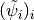 is given by
![\tilde{\psi_i} = \mathcal{F}^{-1}[\psi_i / w]](_images/math/339dd3722b876c7952c17f478f51a8a071531853.png) ,
where 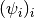 is the alpha-shearlet frame.
The weight
,
where 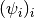 is the alpha-shearlet frame.
The weight w, which is called the dual frame weight, is given by this property.Returns: (2-dimensional numpy.ndarray) The dual frame weight w
-
fourier_norms¶ This property yields the Fourier-side L² norms of the individual spectrograms of the transform (as a tuple(!)).
To obtain the (usually more important) space-side L² norms, use the property
space_norms()instead.Return type: tuple of floats
-
get_frame_bounds(do_norm=False)¶ This method yields the frame bounds of the associated transform as a tuple
(A,B), whereAandBare the lower and upper frame bounds, respectively.Hence, if
(A, B) = self.get_frame_bounds(do_norm=b)andM = numpy.linalg.norm(im) ** 2, then:A * M <= numpy.linalg.norm(self.transform(im, do_norm=b)) <= B*M
for all images
im.Parameters: do_norm (bool) – This is the same flag as passed to
transform(). Recall that in case ofdo_norm=False, the transform calculates the convolutions 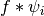, while fordo_norm=True, it calculates the convolutions with respect to the normalized alpha-shearlet filters, i.e., 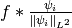.Note
The transform is written in such a way that a frame with good frame bounds is obtained for
do_norm=False. Settingdo_norm=Truewill result in much worse frame bounds. Recall, however, that the one frame is obtained by a simple rescaling of a frame with good bounds.
-
height¶ This property yields the height (in pixels, as an
int) of the images that can be analyzed using theselfobject.
-
indices¶ This property yields a list of so-called indices which describe the geometric meaning of the different “parts” of the alpha-shearlet coefficients.
To better explain this, consider the following example:
>>> my_trafo = AlphaShearletTransform(512, 512, [0.5]*2) >>> my_trafo.indices [-1, (0, -1, 'r'), (0, 0, 'r'), (0, 1, 'r'), (0, 1, 't'), (0, 0, 't'), (0, -1, 't'), (0, -1, 'l'), (0, 0, 'l'), (0, 1, 'l'), (0, 1, 'b'), (0, 0, 'b'), (0, -1, 'b'), (1, -2, 'r'), (1, -1, 'r'), (1, 0, 'r'), (1, 1, 'r'), (1, 2, 'r'), (1, 2, 't'), (1, 1, 't'), (1, 0, 't'), (1, -1, 't'), (1, -2, 't'), (1, -2, 'l'), (1, -1, 'l'), (1, 0, 'l'), (1, 1, 'l'), (1, 2, 'l'), (1, 2, 'b'), (1, 1, 'b'), (1, 0, 'b'), (1, -1, 'b'), (1, -2, 'b')] >>> im = numpy.random.random((512,512)) >>> coeff = my_trafo.transform(im) >>> coeff.shape (33, 512, 512) >>> len(my_trafo.indices) 33
First of all, note that the first dimension of
coeffis the same as the length ofmy_trafo.indices. Precisely,my_trafo.indices[i]encodes information about the alpha-shearlet 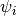 which is used to compute![\mathrm{coeff}[i] = \mathrm{im} \ast \psi_i](_images/math/d4ba48809cffa3b12a5d59db1d101eee24cfad5e.png) .
.The special index
-1means that the associated alpha-shearlet belongs to the low-pass part.All other indices are of the form
(j, k, c), where this 3-tuple describes the properties of the associated alpha-shearlet . Precisely,jencodes the scale (between 0 andself.num_scales - 1) of .kencodes the amount of shearing. This is always an integer satisfying 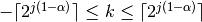, wherealphadenotes the value of alpha associated to scalej.cencodes the frequency cone in which the alpha-shearlet has its frequency support. For the case of complex-valued alpha-shearlets, the frequency plane is divided into the following four cones:value of c ‘r’ ‘t’ ‘l’ ‘b’ cone right top left bottom For the case of real-valued alpha-shearlets, there are just two frequency cones, the horizontal one (encoded by
'h') and the vertical one (encoded by'v').
To get an intuitive understanding of the meaning of the indices and to understand the ordering of the different alpha-shearlets, the following code snippet might be helpful. It loops over all shearlets, prints their index and displays a plot of the spectrogram of the shearlet:
>>> import matplotlib.pyplot as plt >>> from AlphaTransform import AlphaShearletTransform as AST >>> my_trafo = AST(512, 512, [0.5]*3) >>> for index, spect in zip(my_trafo.indices, my_trafo.spectrograms): plt.imshow(spect) plt.title("index: {0}".format(index)) plt.show()
One might also experiment with the additional arguments
real=Trueorperiodization=False(passed to theASTconstructor) to see their effect.
-
inverse_transform(coeffs, real=False, inverse_spects=None, do_norm=True)¶ Computes the inverse alpha-shearlet transform.
Precisely, this method computes the pseudo-inverse of the alpha-shearlet transform. This is the same as first projecting onto the range of the alpha-shearlet transform and then inverting.
In particular, we have the following:
>>> my_trafo = AlphaShearletTransform(512, 512, [0.5]*3) >>> im = np.random.random((512, 512)) >>> coeff = my_trafo.transform(im) >>> np.allclose(im, my_trafo.inverse_transform(coeff)) True
Parameters: - coeffs –
The coefficients of which the inverse transform should be calculated.
Just as for the method
adjoint_transform(),coeffsshould be roughly of the same type as the return value oftransform(). Usually, this argument will be obtained directly or indirectly fromtransform(), e.g. by thresholding. Fore more details, see the documentation ofadjoint_transform(). - real (bool) –
Setting
real=Truewill causeinverse_transformto only return the real part of the actual inverse transform. Hence, we always have:>>> np.allclose(my_trafo.inverse_transform(coeff), np.real(my_trafo.inverse_transform(im, real=True))) True
Note
This is not the same as passing
real=Trueto the constructor of the classAlphaShearletTransform. - do_norm (bool) –
To obtain the (pseudo)-inverse to the method
transform(), this parameter must be set to the same value as for callingtransform().More precisely, recall that passing
do_norm=Truetotransform()causes the transform to be normalized, i.e., to compute 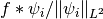 instead of . Ifdo_norm=Trueis passed toinverse_transform(), this normalization is undone and then the usual (pseudo)-inverse is applied. - inverse_spects –
This parameter contains the spectrograms used to compute the inverse transform. For the default value (
None), the usual spectrograms of the canonical dual frame, i.e.,![\tilde{\psi_i} = \mathcal{F}^{-1}[\widehat{\psi_i} / w]](_images/math/e5ef3637bce8465f5ba69e3d36003d0669be2737.png) are used, where
are used, where wis the dual frame weight (cf.dual_frame_weight()).Essentially, this method simply computes 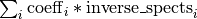, which coincides with the pseudo inverse for the default choice of
inverse_spects.Warning
The parameter
inverse_spectsis mainly for internal use or for performance optimizations. Only use it if you really know what you are doing!
- coeffs –
-
is_parseval¶ Boolean flag indicating whether the transform was normalized to obtain a Parseval frame. This is just the same as the value of
parsevalthat was passed to the constructor ofAlphaShearletTransformto constructoself.
-
is_real¶ Boolean flag indicating whether the transform was symmetrized in Fourier to obtain real-valued alpha-shearlets. This is just the same as the value of
realthat was passed to the constructor ofAlphaShearletTransformto constructself.
-
is_subsampled¶ Boolean flag indicating whether the transform is subsampled. This is just the same as the value of
subsampledthat was passed to the constructor ofAlphaShearletTransformto constructself.
-
num_scales¶ The number of scales of the alpha-shearlet system. This is the same as the length of the parameter
alphasthat was passed to the constructor ofAlphaShearletTransformto constructself.
-
classmethod
num_shears(alphas, j, real=False)¶
-
periodization¶ Boolean flag indicating whether the spectrograms of the alpha-shearlets which exceed the frequency range of the discrete fourier transform are periodized (value
True) or truncated (valueFalse).This is the same as the value of the parameter
periodizationthat was passed to the constructor ofAlphaShearletTransformto constructself.To see the difference, executing the following code with different values for
periodizationmight be helpful:>>> from AlphaTransform import AlphaShearletTransform >>> import matplotlib.pyplot as plt >>> periodization = True >>> my_trafo = AlphaShearletTransform(512, 512, [0.5]*3, periodization=periodization) >>> i = my_trafo.indices.index((2, -2, 'r')) >>> plt.imshow(my_trafo.spectrograms[i]) >>> plt.show()
-
redundancy¶ The redundancy of the alpha-shearlet frame associated to
self. This is the number of coefficients of the transform divided by the number of coefficients of the input image (i.e.,width * height).For the fully sampled transform, associated to each alpha-shearlet, the number of coefficients is identical to the dimension of the input. Hence, the redundancy is the same as the total number of alpha-shearlets, i.e.,
len(self.indices).For the subsampled transform, the redundancy is much lower, but not as easy to calculate. Hence, this property is useful.
-
scale_slice(scale)¶ Convenience method to determine, for a given scale, the part of the spectrograms or of the transform coefficients that belong to the given scale.
As an example, consider the following:
>>> from AlphaTransform import AlphaShearletTransform >>> my_trafo = AlphaShearletTransform(512, 512, [0.5]*3) >>> my_trafo.scale_slice(-1) slice(0, 1, None) >>> my_trafo.scale_slice(0) slice(1, 13, None) >>> my_trafo.scale_slice(1) slice(13, 33, None) >>> my_trafo.scale_slice(2) slice(33, 53, None)
Hence, if
coeff = my_trafo.transform(im)for a given imageim, thencoeff[0:1]is the part belonging to scale-1(i.e., the low-pass part),coeff[1:13]is the part associated to scale0, etc.One can even write
coeff[my_trafo.scale_slice(1)]to directly get the part of the transform coefficients associated to scale1, etc.
-
shearlets¶ A list (or a generator) of the (space-side, non-normalized) alpha-shearlets associated to the transform.
A generator is returned if the
selfobject was created with the optiongenerator=True.
-
space_norms¶ This property yields the space-side L² norms of the analyzing alpha-shearlets. The return value is a single tuple containing all norms.
Note
We use the unitary version of the Fourier transform, so that the dirac delta 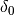 at the origin satisfies 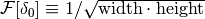.
Regarding the convolution theorem, this implies
![f \ast g &= \sqrt{\mathrm{width} \cdot \mathrm{height}} \cdot
\mathcal{F}^{-1}[\hat{f} \cdot \hat{g}] \\
&= \mathcal{F}^{-1}([\sqrt{\mathrm{width}
\cdot \mathrm{height}}
\cdot \hat{f}]
\cdot \hat{g}).](_images/math/26632affb063374f6a66967ba6564d7396e53274.png)
Hence, since we implement the convolution with the different alpha-shearlets as multiplication in the Fourier domain with the elements of
self.spectrograms, the i-th space-side shearlet is given by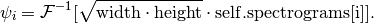
Hence, its L² norm is 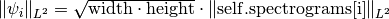
-
spectrograms¶ A list of the spectrograms (Fourier transforms) of the alpha-shearlets associated to the transform.
Note
If the transform was constructed with
generator=True, the return value is a generator instead of a list.The ordering of this list is the same as that of
indices()and of the return value oftransform(), i.e., ifcoeff = self.transform(im)for some imageim, thencoeff[i]are the coefficients associated to the alpha-shearlet with Fourier transformself.spectrograms[i]whose “geometric meaning”(scale, shear, cone)is given byself.indices[i].Warning
The spectrograms are optimized for plotting, via
matplotlib.pyplot.imshow(), not for computations. Hence, they are still “FFT shifted”. This can be undone by consideringfourier_util.my_ifft_shift(self.spectrograms[i]).
-
transform(image, do_norm=True)¶ Computes the alpha-shearlet transform of
image, where the properties (number of scales, value of alpha, etc.) of the transform are determined by theselfobject.Parameters
Parameters: - image (numpy.ndarray) – The “image” of which the transform should be computed.
imagemust be a 2-dimensionalnumpy.ndarraysatisfyingimage.shape == (self.height, self.width). - do_norm (bool) – Boolean flag indicating whether the transform should be
normalized by the (space-side) L² norms of the analyzing
alpha-shearlets. Hence, if
do_norm=True, then the returned coefficients correspond to 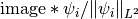, instead of 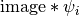.
Return value
Returns: The (possibly normalized) alpha-shearlet coefficients of image. For a precise description of what is computed, we refer to the technical report.Depending on the settings of the
selfobject, the return type varies:- For the fully sampled transform with
generator=False, the return value is a single 3-dimensionalnumpy.ndarrayof dimension(self.redundancy, self.height, self.width). - For the fully sampled transform with
generator=True, the return value is a generator which produces the same output (one 2-dimensionalnumpy.ndarrayat a time) as for the ordinary fully sampled transform. - For the subsampled transform, the return value is a list of 2-dimensional numpy arrays of varying dimensions.
- image (numpy.ndarray) – The “image” of which the transform should be computed.
-
transform_generator(image, do_norm=True)¶ This method does the same as
transform(), but always returns a generator instead of alistor anumpy.ndarray.